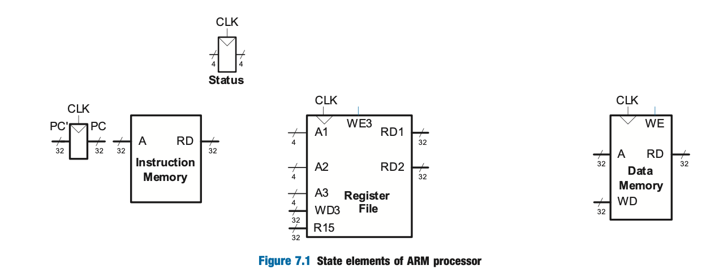
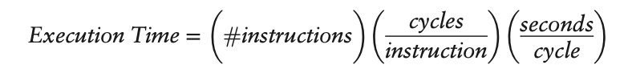
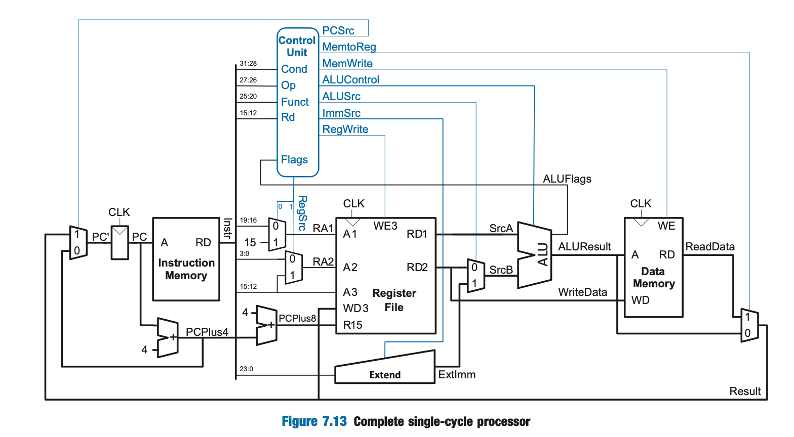

Microarchitecture
- Microarchitecture- the connection between logic and architecture
- specific arrangement of registers, ALUs, FSMs, memories, etc.
- A particular architecture like ARM can have many different microarchitectures, each with their own trade-offs on performance, cost, and complexity
Architectural State and Instruction Set
- A computer architecture is defined by its instruction set and architectural state (e.g. 16, 32-bit registers and status register for ARM processor)
- Based on current architectural state ,the processor executes an instruction with a set of data to produce a new state
We will consider only the following instructions for simplicity:
- Data Processing:
ADD,SUB,AND,ORR(no shifts) - Memory:
LDRandSTR - Branching:
B
Design Process
- Split microarchitectuers into two interacting parts:
- 1) Datapath- operates on words of data and contains structures like memories, registers, ALUs, and muxes
- 32-bit arch --> 32-bit datapath
- 2) Control Unit- receives current instruction from the datapath and tells the datapath how to execute the instruction
- 1) Datapath- operates on words of data and contains structures like memories, registers, ALUs, and muxes
-
Signals Produced by control unit:
- mux select
- register enable
- memory write
-
start with hardware containing state elements and add in combinational logic btw the state elements to compute new state based on current state
- memory is usually split into 2 for instructionsa and data
State Elements

- Status Register: contains the 4 flags from the ALU
- Program Counter:
PC'input is the address of the next instructionPCoutput is address of the current instructon
- Instruction Memory:
Ainput is the address of the 32-bit instructionRDoutput is the 32-bit data (instruction) at the input address
- Register File: holds registers R0-R14
- Read Ports:
A1andA2inputs are the 4-bit addresses of one of the 16 registers (each specifies a source operand)RD1andRD2outputs are the 32-bit register values for the input registers
- Write Port:
A3input is a 4-bit register addressWD3input is 32-bit data to be writtenWE3input specifies whether to write (write enable)- If write is asserted, the data is written to the register specified by
A3on the rising edge of the clock
R15is for managing the relationship with the PC- read from here should always be PC + 8
- Read Ports:
-
Data Memory:
WDinput is the 32-bit data to write to memoryWEinput is whether write is enabled (writes on rising edge of the clock)Ainput is the 32-bit address to read from (ifWE = 0) or write to (ifWE = 1)RDoutput is the 32-bit data read from the specified memory address- only has a value if
WE = 0
- only has a value if
-
Instruction memory, register file, and data memory are read combinationally (i.e. no clock is involved)
- The clock is used in the register file and data memory for controlling writes to only occur on the rising edge (i.e. state only changes on rising edge of clock)
- This makes the microprocessor a synchronous sequential circuit (i.e. microprocessor is a giant FSM or collection of many smaller FSMs)
Microarchitectures
- Single-cycled, multicycleed, and pipelined differ in how the state elements are connected together and in the amount of nonarchitectural state
- Single-Cycled- executes an entire instruction in one cycle
- cycle time limited by slowest instruction
- no nonarchitectural state required
- Multicycle- executes instructions in a series of shorter cycles
- Simpler instructions execute in fewer cycles than more complex one
- Several nonarchitectural state registers to hold intermediate results
- Cheaper b/c it reuses expensive harware like adders and memories
- Executes on instruction at a time, but it takes multiple clock cycles
- Pipelined- executes several instructions simulataneously
- Requires extra logic for handling dependencies between simultaneously executing instructions
- Requires nonarchitecutral state registers
- Use seperate instruction and data caches since they must access instructions and data in the same cycle
- Used by all commercial high-performance processors
Performance Analysis
- Clock frequency and number of cores are unreliable methods of analyzing a processor since certain processors can do more work in a cycle than others
- Execution time on benchmark programs is a more reliable way of measuring performance

- The number of instructions in a program can vary depending on the microarchitecture and the cleverness of the programmer
- Cycles per instruction (CPI)- # clock cycles required to execute an average instruction
- Affected by memory system when its not ideal and there are misses
Single-Cycle Processor

- Next instruction is 32 bits or 4 bytes so we need to add 4 to the current instruction PC to get the next instruction
PC' - The extend block extends the 12 bits from the src2 component to get a properly extended 32 bit result which is send to the ALU with the output from the register file's read output port
- Result of ALU is the memory address we want to read from (the data at outputby the data memory is then passed to the write port in the register file )
Example:
LDR R1, [R2, #5]requires:- read value from R2 (should be an address)
- add offset to it
- read whats at the resulting address
- write the data into R1
Controller
- Combinational logic responsible for calculating the control signals based on the current instruction and current state of the system
- Inputs:
- Different parts of the instruction
- The ALU status flags
- Outputs:
- 8 control signals that control the flow of data in the datapath
Control Signals
PCSrcdecides where to get next instruction from1: ReadData (result of a write to R15 or a branch instruction)0: PC + 4 (next instruction)
RegSrc: two bits which controls two muxes that select where the register addresss of the register file should come from- MSB decides whether the 1st register address should come from instruction bits or from the value 15 to support operations with R15
- LSB decides which part of the instruction bits the 2nd register address should come from
RegWritespecifies whether we are writing into a registerImmSrcis two bits that control what kind of immediate extension needed- unsigned 8 bit, unsigned 12 bit or signed 24 bit immediate to 32-bit immediate
ALUSrcselects where the 2nd ALU argumnet should come from- either a register or the result of an immediate extension
ALUControlselects which operation the ALU should performMemWritespecifies whether or not we are writing our data into memoryMemToRegselects what results should be passed along- either something read from memory or the ALU's result